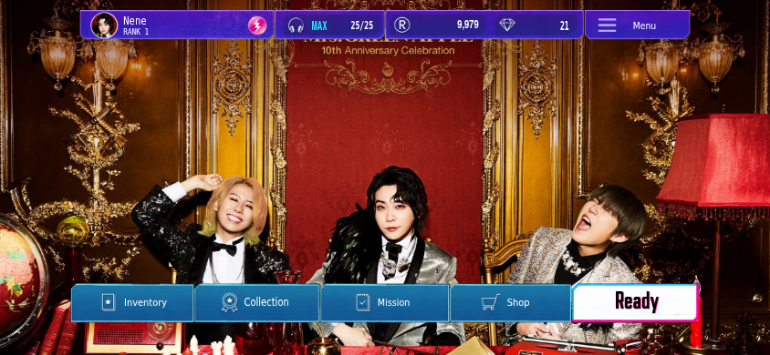
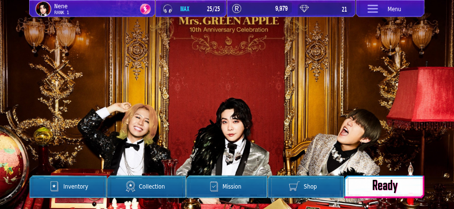
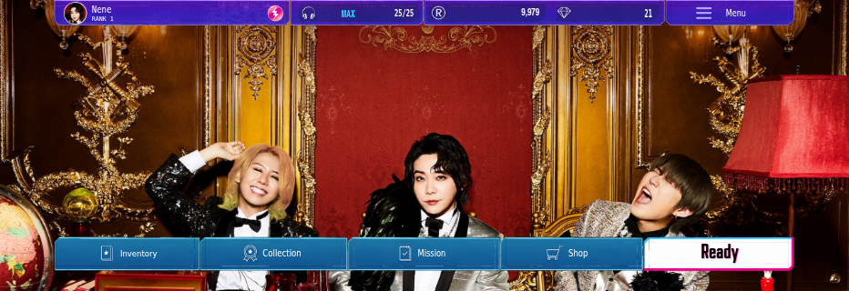
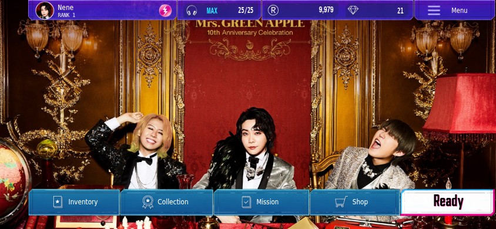

セーフエリア全幅へ上下バーを配置。ボタン背景のみ納品素材の9-sliceを使用し、文字・アイコンの寸法とボタンの高さを維持しています。
844×390の安全領域幅に対する占有率：上部89.5%→100%、下部92.2%→100%。左右の安全領域は維持します。
SuperStarの参考画像は未添付のため直接比較は未実施です。Chromiumでのセーフエリア模擬検証であり、iPhone実機検証ではありません。



